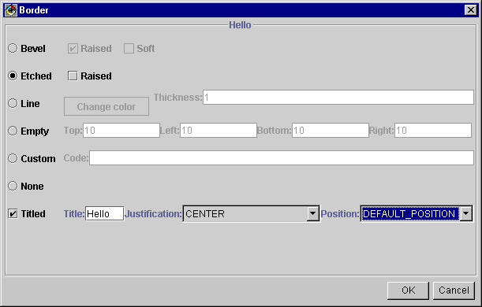

Swing Border Editor
Simple Swing Border Editing in GUI Builders
Description
NOTE: Make sure you read the WARNING sections under usage -- this tool is a tad rough around the edges, but if you enter the right stuff it'll treat you well ;)
Swing Border support is fairly generic in VisualAge for Java 3.5. I've written a property editor that can be used in VAJ to make border edits easy.
NOTE: The Swing Border Editor is only supported for version 3.5 of VisualAge for Java. It is no longer supported for version 2.0 or 3.0.
Installation
To install the border editor in VisualAge for Java 3.5.
When mentioned, installdir refers to the directory in which you installed VisualAge for Java, version 3.5. By default, this should be c:\Program Files\IBM\VisualAge for Java
- Shutdown VisualAge for Java.
- Download bordereditor.zip from this site. This zip includes the source and executables for the border editor.
- Extract bordereditor.zip into the installdir\ide\features directory.
- Startup VisualAge for Java. You should see a few messages about the features being installed.
- Select "Quick Start" from the "File" menu of the Workbench.
- Select "Features" from the left pane of the Quick Start window, then "Add Feature" from the right pane.
- Select "Javadude Swing Border Editor" and press OK.
- Create and save file installdir\ide\program\lib\ivj-property-editor-registry.properties containing the following line:
javax.swing.border.Border=com.javadude.bordereditor.BorderEditor
Use
WARNING 1: If you use this border editor, you will lose any previous border settings!
WARNING 2: I haven't added any real exception handling in yet -- BE CAREFUL WHEN ENTERING NUMBERS IN TEXTFIELDS! I'll fix this when I have time. I just wanted to get this out to try.
WARNING 3: If you use "Custom" borders, you're completely on your own for the code you write. Be careful. And make sure you either add import statements for any class refs, or fully-qualify them.

Hopefully the interface is fairly obvious.
You select from the type of border you want:
-
bevel - a raised/lowered, and possibly "soft" bevel border
-
etched - an etched/raised line
-
line - a varying width and color line around the edge. NOTE: Make sure you enter valid numbers or you'll see exceptions thrown in the console... I'll fix this in the next release.
-
empty - empty space around the edges. NOTE: Make sure you enter valid numbers or you'll see exceptions thrown in the console... I'll fix this in the next release.
-
custom - you type the code -- NOTE: the tool does not verify this code!
-
none - the layout will be set to "null". Note that this is not the same as the "default" layout for the border. There is currently no way in VAJ to "unset" a property once it has been set.
Fill in the details for the border type you want, then choose if you want that border titled or not. If you want it titled, select the parameters for the titling.
As you make changes, they will be reflected in the border editor's border so you can see what the result will look like.
When you press "Ok" you should see the new border appear in the VCE around the component being edited.
Uninstalling from VisualAge for Java, version 3.5
To uninstall from version 3.5:
- Delete the
javax.swing.border.Border=com.javadude.bordereditor.BorderEditorline from installdir\ide\program\lib\ivj-property-editor-registry.properties
- Delete the added features (File->Quick Start->Features->Delete Feature)
License
The Swing Border Editor for VisualAge for Java is free for any use other than selling it as a stand-alone product.
Note that this code is provided "as-is" without any warrantee or guarantee of suitability for any purpose. Scott Stanchfield cannot be held responsible for any damage caused by use this code.
(In other words, use 'em for free at your own risk.)
Bug Reports/Feature Requests
Please let me know about any bugs you find or requests for what you'd like to see this tool do. Feel free to send example code to implement it as well.
Future Directions
- I need to document and comment the code like crazy
- I want to add nested borders (should be fairly easy, but I gotta think about exactly how they interact first)
- Good exception handling is necessary -- I'll add it in the next release.
Copyright © 1996-2014, Scott Stanchfield. All Rights Reserved.
Contact me at scott@javadude.com
JavaDude.com Home
Rounded-corner figures based on "More Snazzy Borders" by
Stu Nicholls
 Want
to hear about new stuff at JavaDude.com? Use this RSS Feed!
Want
to hear about new stuff at JavaDude.com? Use this RSS Feed!